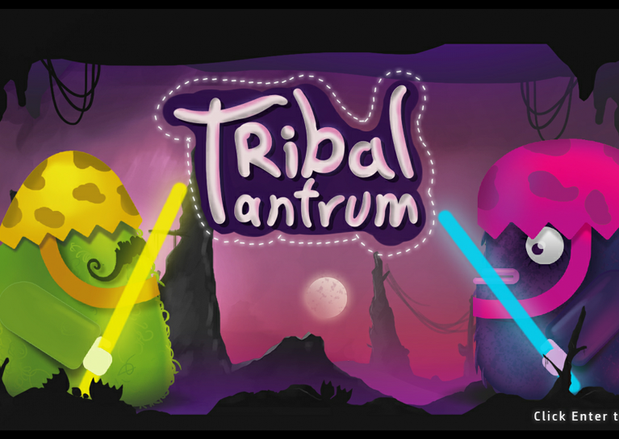

Home

2D multiplayer platformer where two opposing tribes try to convert each other to complete an old ritual. where a tribe thought that opposing the Golden egg upright will bring to them good luck and bountiful harvest, the other tribe thought the exact opposite. Fight enemy tribe to convert them into one of your own. -Requires Joysticks To Play .
This game was developed using Unity3D in 48 hours during the Global Game Jam - Egypt 2016 and honored by Google
Feel free to check it out
here